Automatic transaxle inspection
Torque Converter Inspection
1. Inspect the outer surface of the torque converter for damage or cracks, and replace it if necessary.
2. Inspect for rust on the pilot hub of the torque converter or on the boss. If there is any, remove the rust completely.
Oil Pump Preinspection
1. Measure the bushing of the oil pump.
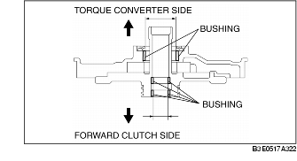
Bushing inner diameter
- Torque converter side
- Standard: 40.015-40.040 mm
- {1.57539-1.57637 in}
- Maximum: 40.060 mm {1.57716 in}
- Forward clutch side
- Standard: 19.000-19.021 mm
- {0.74803-0.74885 in}
- Maximum: 19.041 mm {0.74964 in}
2. If not as specified, replace the oil pump housing and oil pump cover. (See OIL PUMP DISASSEMBLY/ASSEMBLY.)
Forward Clutch Preinspection
Clutch operation
1. Set the forward clutch onto the oil pump.
- • Applying compressed air to the assembled clutch pack for longer than 3 s at a time will damage the seal.
- Do not apply compressed air for more than the aforementioned time when testing the system.
2. Inspect the clutch operation by applying compressed air through the fluid passages shown.

3. If not as specified, replace parts as necessary. (See FORWARD CLUTCH DISASSEMBLY/ASSEMBLY.)
Clutch clearance
1. Measure the forward clutch clearance.
- (1) Install the forward clutch in the oil pump, and set the dial gauge.
-
(2) Secure the forward clutch by lightly pressing down with a press, etc.
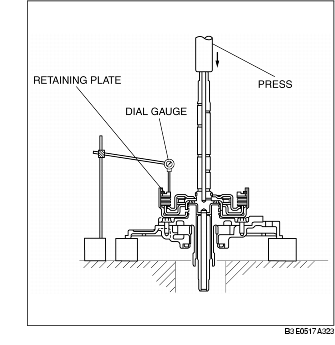
-
(3) Apply compressed air to the part indicated in the figure and let the forward clutch piston stroke three times.
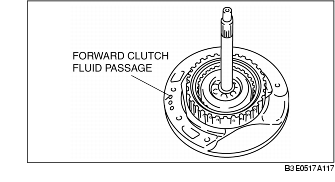
Air pressure
- (4) Apply compressed air and operate the forward clutch piston. Read the value when the indicator of the dial gauge stops.
- (5) Release the compressed air and read the dial gauge when the forward clutch piston is not operating.
- (6) Calculate the forward clutch clearance according to the following formula:
- Step (4) value - Step (5) value = Forward clutch clearance.
-
(7) Measure the clearances at four locations (90° apart) by following the steps from (3) to (6). Verify that the average value is within the specification below.
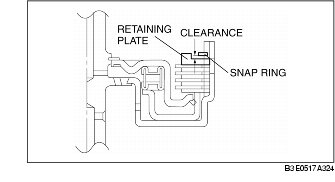
Forward clutch clearance
2. If not as specified, replace parts as necessary. (See FORWARD CLUTCH DISASSEMBLY/ASSEMBLY.)
Clutch Component Preinspection
Clutch operation
1. Set the clutch component onto the end cover.
- • Applying compressed air to the assembled clutch pack for longer than 3 s at a time will damage the seal.
- Do not apply compressed air for more than the aforementioned time when testing the system.
2. Inspect the clutch operation by applying compressed air as shown.
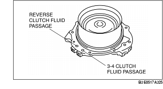
Air Pressure
3. If not as specified, replace parts as necessary. (See CLUTCH COMPONENT DISASSEMBLY/ASSEMBLY.)
Reverse clutch clearance
1. Measure the reverse clutch clearance.
- (1) Install the reverse clutch into the end cover, and set the dial gauge.
-
(2) Secure the reverse clutch by lightly pressing down with a press, etc.
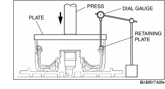
-
(3) Apply compressed air to the part indicated in the figure and let the reverse clutch piston stroke three times.
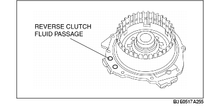
Air Pressure
- (4) Apply compressed air and operate the reverse clutch piston. Read the value when the indicator of the dial gauge stops.
- (5) Release the compressed air and read the dial gauge when the reverse clutch piston is not operating.
- (6) Calculate the reverse clutch clearance according to the following formula: Step (4) value - Step (5) value = Reverse clutch clearance.
-
(7) Measure the clearances at four locations (90° apart) by following the steps from (3) to (6). Verify that the average value is within the specification below.

Reverse clutch clearance
2. If not as specified, replace parts as necessary. (See CLUTCH COMPONENT DISASSEMBLY/ASSEMBLY.)
3-4 clutch clearance
1. Measure the 3-4 clutch clearance.
- (1) Install the 3-4 clutch in the end cover and set the dial gauge.
-
(2) Secure the 3-4 clutch by lightly pressing down with a press, etc.
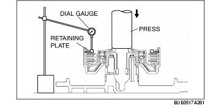
-
(3) Apply compressed air to the part indicated in the figure and let the 3-4 clutch piston stroke three times.
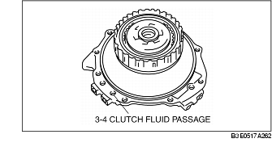
Air pressure
- (4) Apply compressed air and operate the 3-4 clutch piston. Read the value when the indicator of the dial gauge stops.
- (5) Release the compressed air and read the dial gauge when the 3-4 clutch piston is not operating.
- (6) Calculate the 3-4 clutch clearance according to the following formula:
- Step (4) value - Step (5) value = 3-4 clutch clearance.
-
(7) Measure the clearances at four locations (90° apart) by following the steps from (3) to (6). Verify that the average value is within the specification below.
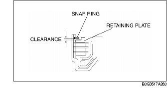
3-4 clutch clearance
2. If not as specified, replace parts as necessary. (See CLUTCH COMPONENT DISASSEMBLY/ASSEMBLY.)
Bushing inner diameter inspection
1. Measure the bushing of the 3-4 clutch hub.
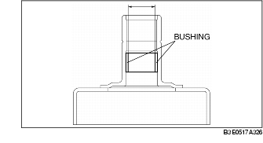
Bushing inner diameter
2. If not as specified, replace the 3-4 clutch hub.
(See CLUTCH COMPONENT DISASSEMBLY/ASSEMBLY.)
3. Measure the bushing of the 2-4 brake drum.
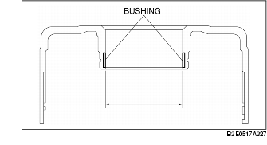
Bushing inner diameter
4. If not as specified, replace the 2-4 brake drum. (See CLUTCH COMPONENT DISASSEMBLY/ASSEMBLY.)
Front Internal Gear and One-Way Clutch Component
Preinspection
1. Set the front internal gear and one-way clutch component to the one-way clutch inner race. Verify that the one-way clutch rotates smoothly when turned counterclockwise and locks when turned clockwise.
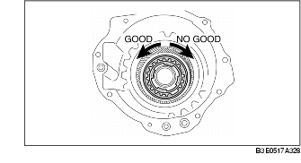
2. If not as specified, replace parts as necessary. (See FRONT INTERNAL GEAR ONE-WAY CLUTCH COMPONENT DISASSEMBLY/ASSEMBLY.)
Low and Reverse Brake Preinspection
Clutch operation
- • Applying compressed air to the assembled clutch pack for longer than 3 s at a time will damage the seal.
- Do not apply compressed air for more than the aforementioned time when testing the system.
1. Inspect the clutch operation by applying compressed air as shown.

Air pressure
2. If not as specified, replace parts as necessary. (See LOW AND REVERSE BRAKE AND ONE-WAY CLUTCH INNER RACE DISASSEMBLY/ASSEMBLY.)
Clutch clearance
1. Measure the low and reverse brake clearance.
- (1) Set the dial gauge to the low and reverse brake.
-
(2) Set the measuring point of the dial gauge to the low and reverse brake piston.
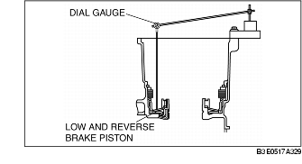
-
(3) Apply compressed air to the part indicated in the figure and let the low and reverse brake piston stroke three times.

Air pressure
- (4) Apply compressed air and operate the low and reverse brake piston. Read the value when the indicator of the dial gauge stops.
- (5) Release the compressed air and read the dial gauge when the low and reverse brake piston is not operating.
- (6) Calculate the low and reverse brake clearance according to the following formula:
- Step (4) value - Step (5) value = low and reverse brake clearance.
-
(7) Measure the clearances at four locations (90° apart) by following the steps from (3) to (6). Verify that the average value is within the specification below:
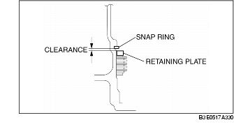
Low and reverse brake clearance
2. If not as specified, replace parts as necessary. (See LOW AND REVERSE BRAKE AND ONE-WAY CLUTCH INNER RACE DISASSEMBLY/ASSEMBLY.)
Differential Preinspection
Backlash
1. Measure the backlash of the side gear.

Backlash
2. If not specified, replace the differential. (See DIFFERENTIAL DISASSEMBLY/ASSEMBLY.)